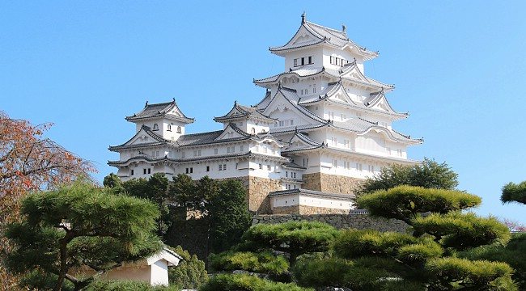
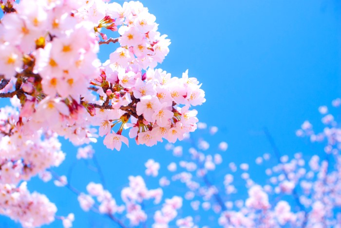
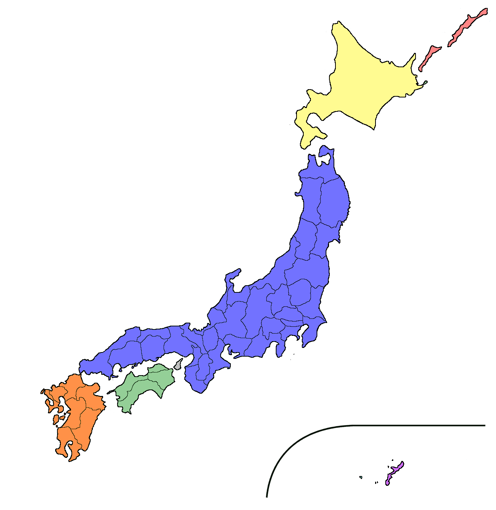
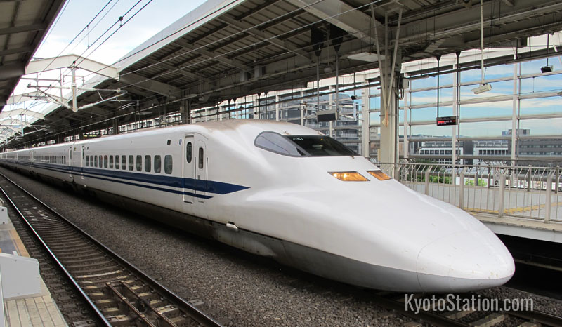

Japan is a wonderful country. Click the various sections below to learn more about it!
Click here to learn about Japanese castles!
Japanese castles are typically made of wood, but on top of a strong stone base. Here is an image of one of the most famous Japanese castles, Himeji:
Click here to learn about sakura!
Cherry blossoms, or sakura as they are known in Japan, are revered nationally. Every spring, news networks broadcast forecasts of when sakura will be blooming across Japan, as if it were a meteorological event. While sakura are blooming, Japanese often have picnic parties under the cherry trees, an event known as hanami — flower viewing.
Click here to learn about the four islands that make up most of Japan!
Japan consists of four main islands: Hokkaido, shown here in yellow; Honshu, in blue; Shikoku, in green; and finally, Kyushu, in orange.
Click here to learn about Japan's famous bullet train!
Long regarded as the fastest trains in the world until being superceded by maglev, shinkansen, Japan's bullet trains, are still among the best, and the speedy train network extends across the entire nation.
